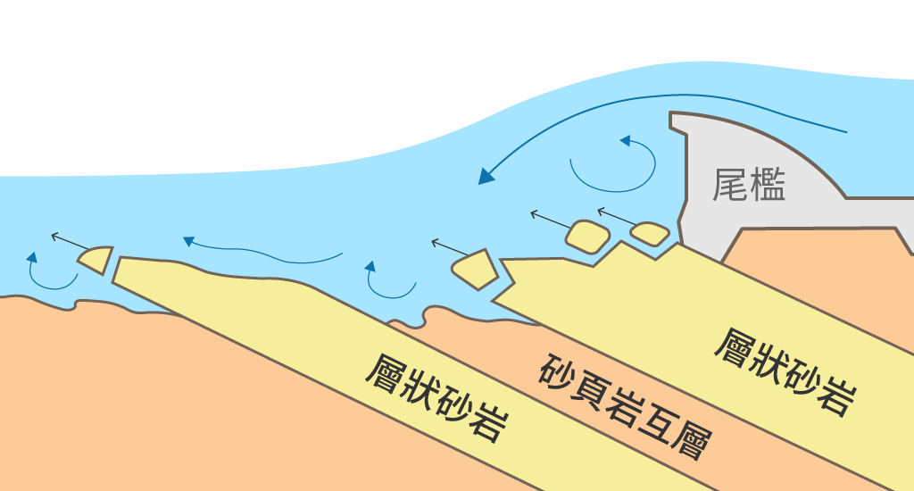

1.塊體抽離型
為塊體抽離的沖刷形式，因岩石(下圖黃色區域)強度較強，遠大於節理面強度。岩石強度強，代表水流作用力對岩盤本身的磨蝕較少，且較不易因撞擊產生新裂隙。因此水流沖擊力、顆粒撞擊力、渦流及壓力波動皆會經由水流拖曳力及裂縫間的水壓放大效應將塊體(下圖灰色區域)上舉脫離。
節理面 joint
當岩層受力而變形、斷裂，會產生破裂面。
2.均勻下切型
水流均勻逐層下切的沖刷模式，主要發生在1.厚層頁岩、2.砂頁岩互層中的頁岩或是3.強度較弱的砂岩及粉砂岩。主要是岩石強度較弱，但節理不多。岩石強度弱，代表水流直接衝擊岩盤時，使河床面產生的剪應力對岩盤表層磨蝕的影響相對較大，節理不多的岩體沒有特定的破壞面，水流的沖擊力及顆粒撞擊力造成裂隙均勻產生，則受到渦流及壓力的波動之後，岩盤表面會產生岩石的碎屑後再被水流沖離。
剪應力 shear stress
力量的方向與受力面呈垂直的一種物體內部受到的力。
渦流 vortex
漩渦型的水流，與正常水流方向相反。

3.槽溝下切型
主要出現在兩種以上岩層交錯出現的岩盤，通常為砂岩與頁岩交替出現的地層，岩層方向與河道平行或傾斜，由於頁岩(下圖橘色區域)的沖蝕速率較快，所以當頁岩被侵蝕後，尚未被侵蝕的砂岩(下圖黃色區域)將會被孤立，失去原本兩側包覆的頁岩且凸顯範圍增加，加速了水流的沖擊力、顆粒撞擊力、渦流及壓力的波動對孤立砂岩的影響，造成彎曲而斷裂，加速塊體脫離的潛在危險。